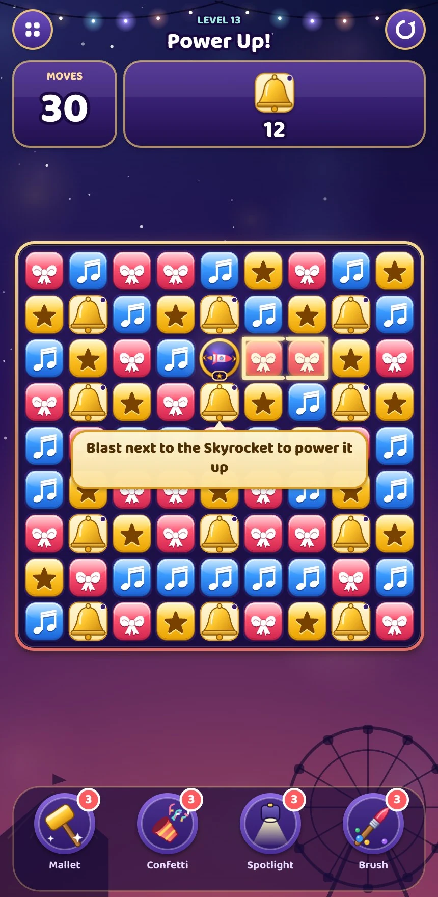

A small group needs a purpose
A small group may not create a special, but it can still be useful if blasting it builds the power of a neighbouring special.
A blast puzzle concept connecting a signature mechanic to progression, meta and economy.
Power-Up Charge is the starting point. The study connects it to a festival theme, the first 50 levels and a prototype demonstration.

Small groups can build a stronger special. The level plan teaches that decision, while festival construction gives wins a visible longer-term purpose.
Keep the familiar blast interaction, then make the position and timing of a small group matter.
A small group may not create a special, but it can still be useful if blasting it builds the power of a neighbouring special.
Tap to blast, activate or combine. Put the extra decision into position, group shape and timing instead of another input.
Charge needs a clear introduction, practice and later situations that reward deliberate use. It cannot depend on a paragraph of instructions.
A special begins at one star. A player blast beside it adds one star, up to three; special explosions do not charge other specials.
| Special | ★1 | ★2 | ★3 |
|---|---|---|---|
| Skyrocket | One row or column | Three adjacent lines | Three lines + one perpendicular line |
| Firecracker Box | 3 × 3 area | 5 × 5 area | 7 × 7 area |
| Star Shell | Its colour | Its colour + adjacent obstacle damage | A second colour + adjacent obstacle damage |
Where a special spawns is determined by the tapped tile; the group shape determines a Skyrocket’s direction.
The same theme gives the core board and the longer progression a shared purpose.
Prepare the show through blast puzzles.
Earn a star and coin rewards.
Spend stars on festival tasks.
Finish the town with a Grand Show.
Move to the next festival setting.
| Resource | Earned through | Spent on | Design purpose |
|---|---|---|---|
| Stars | One per completed level | Festival construction tasks | Visible progression tied to wins |
| Coins | Wins, leftover moves, chests and events | Continues, boosters and life refills | Flexibility within a session |
| Lives | Timed refill and help systems | Failed attempts | Session pacing |
| Encore | A sequence of first-try wins | Better starting support; resets on a loss | A proposed reason to protect a streak |
The plan assigns a teaching role to each level and uses challenge followed by relief, rather than a continuously shrinking move budget.
A short recording demonstrates the guided Charge interaction. It is a concept prototype rather than a released product.
The recorded tutorial places a goal beyond the starting special’s reach. The player charges the special before activating it, connecting the new rule to a visible outcome.
The original prototype includes six sample levels, specials, combinations and selected obstacle families. The recording shown here is an excerpt.
The strongest result is a connected design specification with a demonstrable interaction and explicit questions for the next test.
The original study’s prototype simulations reported a 72% greedy-bot win rate with Charge versus 33% without it on the selected challenge level. A strategy using Charge deliberately reported 84%. These comparisons concern that prototype and those bot policies; they are not human win-rate or retention estimates.
A combination-rule revision preserved the charged coverage of both component specials. The next human test should check whether players independently understand and use Charge after guidance, and whether the extra planning feels rewarding.
Implementation rules and tuning assumptions that support the main design.
| Input or group | Proposed outcome |
|---|---|
| Tap an orthogonally connected group of 2+ | Blast the group; spend one move |
| 5–6 tiles | Create a Skyrocket on the tapped tile |
| 7–8 tiles | Create a Firecracker Box |
| 9+ tiles | Create a Star Shell |
| Tap a single tile | Feedback only; no move spent |
| No legal group | Automatic shuffle |
| Level | Design role |
|---|---|
| 1 | Blast beside a simple goal |
| 2–3 | Create and use the first specials |
| 4 | Learn a falling collection objective |
| 6 | Combine adjacent specials |
| 11 | Introduce a target that requires specials |
| 13 | Teach Charge with a guided stage, then independent use |
| 21 | Introduce floor coverage |
| 29 | Combine known demands in a challenge |
| 30 | Follow the challenge with a relief level |
| 50 | Close the third festival town |
Adjust goal load, durability, open space and spawn support before using moves as the first response to difficulty. Treat colour count as a stronger change to the level’s role.
A curated excerpt adapted from individual application work. Studio and product identifiers, the original brief and complete submission are omitted. Proposed tests are distinguished from observed or documented results.